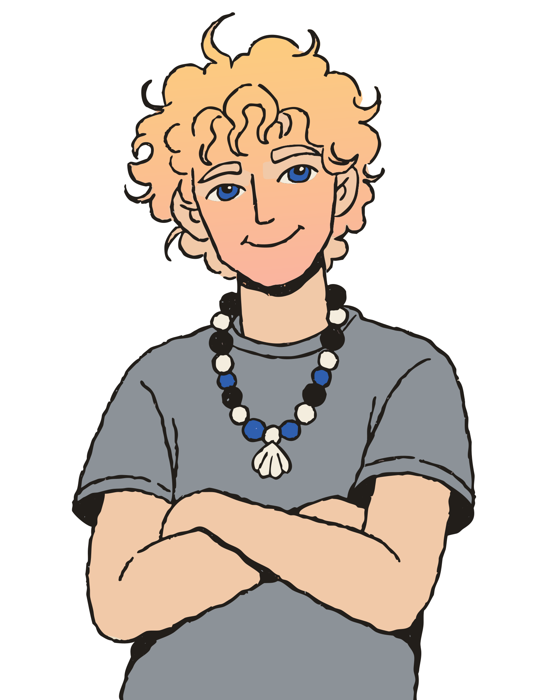

How it started
I came to the web the way a lot of designers do: I wanted the things I imagined to actually exist, not just live in a mockup. So I taught myself to code. What began as curiosity, pushing pixels in the browser at 2am, turned into a proper craft, and eventually into a one-person studio.
Today I work with founders, small teams and studios who need a website, a product interface or a full brand identity built quickly, without the usual back-and-forth between “the designer” and “the developer.” Here, they're the same person.
